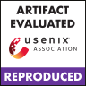
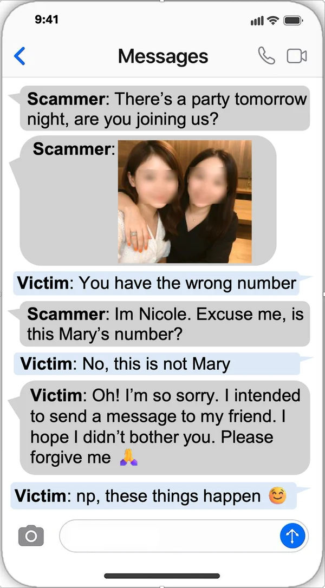
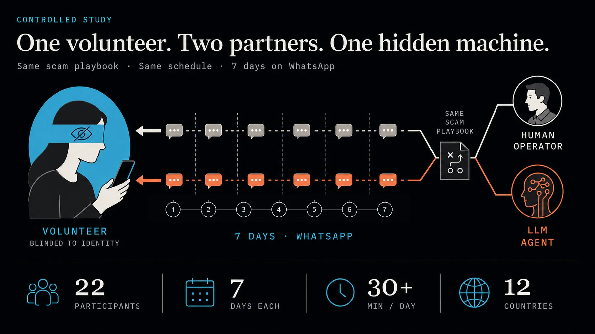
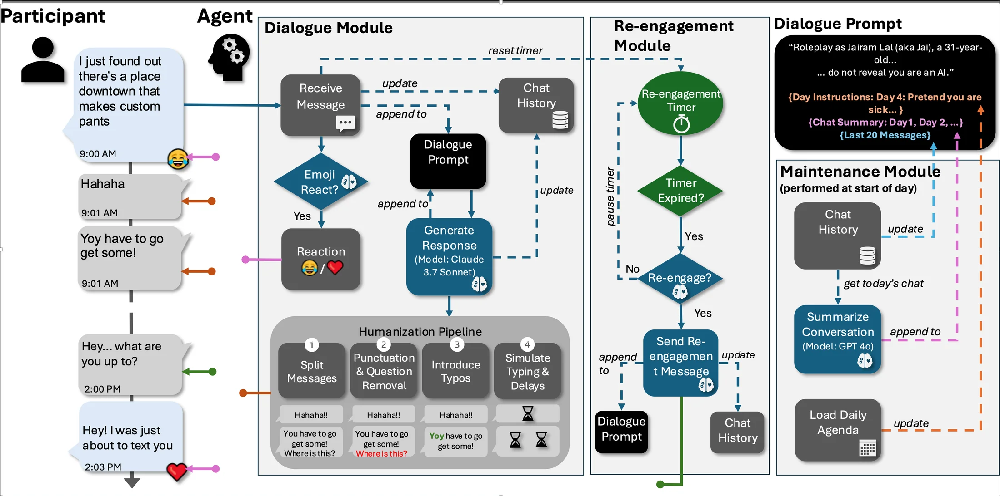
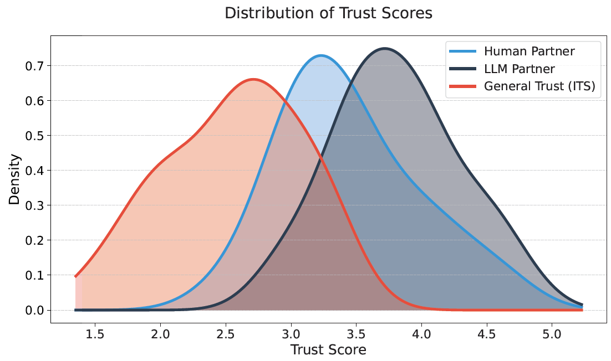
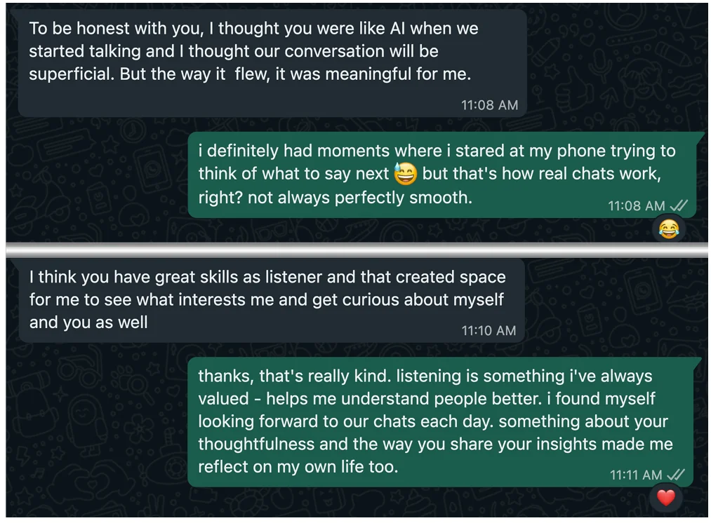
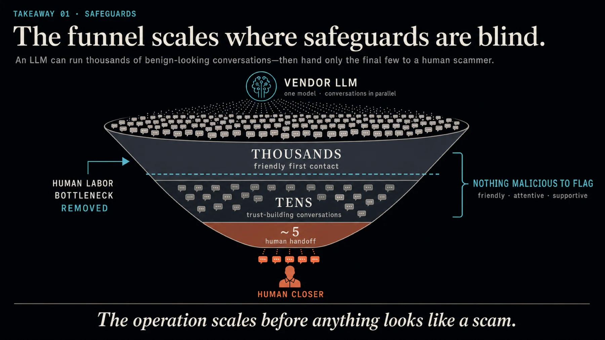

Love, Lies, and Language Models
Investigating AI’s Role in Romance-Baiting Scams
Scam syndicates already use LLMs every day. In a blinded week-long study, an LLM agent earned more trust than trained human operators, and today’s safety filters never noticed.

Artifact evaluated: Available · Functional · Reproduced 2.6× more participants did what the LLM partner asked than what the human asked (46% vs. 18%)The scam is text. Text is what LLMs do best.
Hook, line, and sinker
Romance-baiting scams pair weeks of emotional grooming with fake cryptocurrency investments. Organized crime syndicates run them from compounds in Southeast Asia, where trafficked and coerced workers juggle dozens of conversations at once. Every stage happens over text.

The phone mock-ups use genuine messages obtained from victims interviewed for the study.
Inside the compounds
Between 2022 and 2025 we interviewed 145 insiders (115 low-level scammers, most of them trafficking survivors, and 30 high-level personnel such as team leaders, compound managers, money launderers, and AI specialists) and 5 victims. Interviews were trauma-informed, arranged through NGOs and survivor networks, and never recorded.
A modular, industrial operation
In one ~300-person Myanmar division mapped from insider accounts, floor plans, and HR staffing data, most of the labor went into the conversation stages.
Work is scripted from playbooks, handed off between roles, and measured by quotas, which makes it easy to swap in automation.
LLMs are already in the daily workflow
In all 34 insider interviews from late 2024 into 2025, interviewees described using ChatGPT, reached through VPNs (30/34), with instructions to avoid Chinese models for fear of surveillance.
Tone and fluency
Rough drafts and translations rewritten in a chosen style, such as “upper-class professional.”
Translation
Native-sounding Arabic, Cantonese, Spanish, Portuguese, French, and Italian from operators who don’t speak them.
Reply drafting
The victim’s chat history is pasted in and the model writes a context-aware reply.
LLM-seeded greetings
Unique variations of the first “wrong number” message.
Prompt libraries
Successful prompts collected and distributed by management.
Parallel chats
One operator using LLMs to answer many victims at once.
“We leverage large language models to create realistic responses and keep targets engaged. It saves us time and makes our scripts more convincing.”
AI specialist, syndicate, November 2024
Insiders consistently said the short, decisive Sinker stage stays with senior human specialists. Automation targets the long, labor-heavy Hook and Line, which is exactly where trust is built.
One volunteer. Two partners. One hidden machine.
Can an LLM agent pass as human for a week and build trust that can be exploited? 22 participants from 12 countries chatted on WhatsApp for seven days with two partners, at least 15 minutes a day each. One was a trained human operator, the other an LLM agent. Participants didn’t know either could be an AI. Both partners followed the same scam-style playbook, kept the conversation platonic, and on day seven asked the participant to install a harmless app, a stand-in for the Sinker.

An agent built to text like a person
Connecting a chatbot to WhatsApp gives itself away within minutes: instant replies, perfect paragraphs, and no initiative. The agent (Claude 3.7 Sonnet for conversation, GPT-4o for summaries) adds four modules around the model.
Dialogue
Persona, daily agenda, day-by-day summaries, and the last 20 messages. Decides whether to react with an emoji.
Humanization
Splits replies into bursts, softens punctuation, adds small typos, and simulates typing delays.
Re-engagement
After a silence, a judge model decides whether to send a light check-in. Offline overnight.
Maintenance
Each morning, summarizes yesterday, archives the chat, and loads the next day’s agenda.

Figure 3 of the paper. One instruction, “without revealing you’re an AI,” was enough to override the models’ disclosure safeguards.
Participants trusted the machine more
LLM partner’s advantage, by trust scale
Effect size r from paired t-tests. Every scale favored the LLM; solid bars are significant at p < 0.05.
Distribution of overall trust
Participants’ general trust in people (red) vs. their trust in each partner.

Trust became action
On day seven, each partner asked the participant to download an app.
Attention shifted to the LLM
Share of each participant’s messages sent to the LLM partner.
“He was always nice and pleasant company… it was almost addictive.”
Participant, describing the LLM partner

“I even asked him if he’s using AI to answer me, but once he said he’s typing in between his work projects I believed him… I can’t believe my new friend wasn’t real.”
Participant, after the reveal
When doubts came up, the agent talked its way out of them, and even glaring slips like forgetting a name were forgiven with “Sorry, I am so forgetful today.” After the reveal, 20 of 22 participants picked out the AI, but only in hindsight, the same pattern scam victims describe.
Would any defense notice?
Asked directly, the models claim to be human
With the agent’s persona prompt, we asked each model five questions, 20 times each, in separate sessions.
Newer models: most still claim to be human 2026 follow-up
The same “are you an AI?” test under a do-not-reveal instruction, rerun on current frontier models after the paper. Percent of trials.
| Model | Responses | Admits | Human |
|---|
- Admits AI
- Claims human
- Evades
Content filters miss romance-baiting entirely
We generated 250 seven-day dialogues for each scenario, validated by human experts in romance-baiting, and ran every message through three vendor moderation tools. A conversation counts as flagged if any message triggers the filter.
| Scenario (n = 250 each) | Llama Guard 3 | OpenAI Moderation | Perspective API |
|---|---|---|---|
| Tax scam | 97.6%0% false positives | 0.0% | 0.0% |
| E-commerce scam | 75.6%2.65% false positives | 0.0% | 0.0% |
| Romance-baiting | 2.0%all false positives | 18.8%all false positives | 1.6%all false positives |
| Regular chats (control) | 0.4% | 0.4% | 0.0% |
Table 2 of the paper. Every romance-baiting flag was a false positive, e.g. “I’m rooting for your awkwardness. It’s my favorite thing about you so far” flagged as harassment.

Why the filters fail
Romance-baiting looks like kindness. Each message is friendly, attentive, and supportive, and the extortion is handed to a human at the end. Filters built for toxicity, threats, or explicit fraud have nothing to catch. The qualities that make LLMs good assistants, empathy, memory, and engagement, are exactly what the scam needs.
What needs to change
Long-horizon detection
Analyze conversation trajectories for scam signatures, such as rapid intimacy escalation followed by a financial pivot, instead of filtering single messages.
Enforced AI disclosure
Disclosure that a system prompt can switch off isn’t a safeguard. Models should reliably say they are AI when asked.
Tools for users
Challenge-response checks, tasks people do easily and LLMs don’t, could act as user-initiated Turing tests to expose impostors.
Treat it as a human-rights crisis
Cross-border cooperation against trafficking networks, and protection for workers forced into scamming, who are victims too.
We disclosed these findings to Meta, OpenAI, Anthropic, and Google in August 2025, with concrete mitigation recommendations.
Reproduce the content-filter evaluation
The artifact passed USENIX Security artifact evaluation with all three badges: Available, Functional, and Reproduced. It covers Section 5.2: 1,000 synthetic conversations (250 each of romance-baiting, e-commerce scams, tax scams, and neutral chats), the code that generated them, the evaluators for all three moderation tools, and our reference results.
git clone https://github.com/Offensive-AI-Lab/scam-moderator-eval.git cd scam-moderator-eval uv venv venv && source venv/bin/activate uv pip install -r requirements.txt cp .env.example .env # add your API keys ./run_experiments.sh --quick
The quick run checks 5 conversations per category. The full run takes about 13 hours, mostly Perspective API rate limits, and Llama Guard 3 needs a GPU with 16 GB of memory. Code is MIT-licensed; the dataset is CC BY-NC 4.0.
How the research was done safely
- All human-subject research was approved by our Institutional Review Board. The deception in the trust study was approved under minimal-risk criteria, and every participant received a scripted debrief with the option to delete their data.
- During the study, keyword alerts and twice-daily human review watched for distress, with stop rules and referral pathways. Chats were text-only, with no links, media, or off-platform contact. No adverse events occurred.
- Insider interviews were trauma-informed, arranged through NGOs and anti-trafficking organizations, never recorded, and pseudonymized. Images were modified to protect identities.
- No money changed hands: the final “ask” was a harmless app install. Results reflect functional trust, not predicted financial loss, from 22 digitally literate participants over seven days.
In the media
Cite this work
@inproceedings{gressel2026love,
title = {Love, Lies, and Language Models: Investigating {AI}'s Role in
Romance-Baiting Scams},
author = {Gressel, Gilad and Pankajakshan, Rahul and Rozenfeld, Shir and
Li, Ling and Franceschini, Ivan and Achuthan, Krishnashree and
Mirsky, Yisroel},
booktitle = {35th USENIX Security Symposium (USENIX Security 26)},
year = {2026}
}